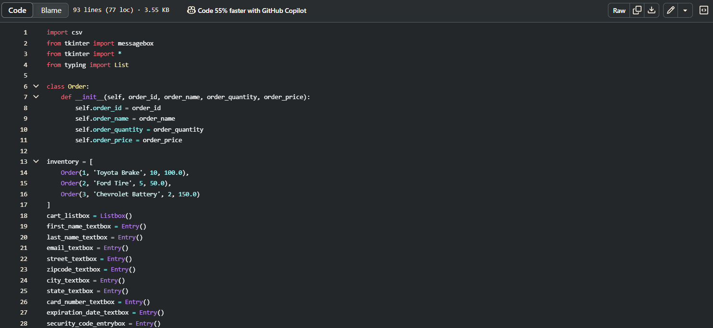

Home

Aspiring computing developer with a drive for innovation
Greetings, my name is Erick Rayas. I am a junior here at California State University, Fullerton. I am majoring in computer science. I was born in Van Nuys California in the Los Angeles County within the San Fernando Valley. I was raised in the city of North Hills. I enjoy gaming, bowling, computing, exercising, playing with my pets, going out, and exploring new things. I plan to increase my knowledge and expertise beyond my degree as I plan on participating on extra curriculars on this wonderful university campus for what it has to offer. Thank you for visiting my page and I look forward getting to know you.
About
About Me
Hello! My name is Erick Rayas. I am currently a junior at California State University, Fullerton, majoring in Computer Science. Ever since I can remember I have always had a deep passion for technology, more specifically with computing systems. This led me to pursue a study for a career in computing and software development. As I continue to gain a more solid foundation in programming and finding solutions, I am eager to improve my skills and help make the world a better place through the tech industry.
Education
I am currently enrolled at California State University, Fullerton, where I am pursuing a Bachelor of Science degree in Computer Science while also seeking educational opportunities outside of CSUF to enhance my professional skills. I previously attended Los Angeles Mission College, where I earned two Associate of Science for Transfer degrees in Mathematics and Computer Science. Prior to that, I graduated from Valley Academy of Arts and Sciences. I briefly attended California State University, Northridge before transferring to CSUF to complete my academic journey.
SkillsI am proficient in various programming languages including:
- JavaScript, Python, Java, C++, HTML/CSS, NASM assembly language
- Familiar with IDEs such as Visual Studio Code, JGrasp, and Eclipse
I am also proficient in other computing-related skills such as:
- Familiar with basic electronics knowledge such as soldering, Arduino, and circuit testing
- Strong understanding of software roles such as software engineering, data structures, algorithms, and databases
Interests
Apart from my major interests in computing, during my free time I enjoy gaming, bowling, exercising, and spending time with my pets. I am always willing to find and explore new things to have the desire to improve myself for myself professionally and personally. Future goals I am looking forward to take on new challenges to increase my knowledge as there is so much I do not know in the field of computing. My major goal is to work in a role where I can create software solutions that improve our lives.
Download Resume
You may download my resume here.
Projects
Auto Starters - Online Retail Page
The CSUN course COMP 380/L: Introduction to Software Engineering used this project as an introductory software engineering group assignment. This project was done for the fall 2024 semester. The project is a website that operates as an e-commerce platform which enables customers to find car parts using details such as vehicle year, make, and model. The platform provides users with the means to search for multiple components including tires, batteries, motor oil and brakes which helps customers find necessary parts with greater efficiency and ease.
A range of software engineering principles, such as database integration and user interface design were implemented to offer users a smooth and intuitive experience with the project. Customers can quickly filter their options according to their vehicle specifications using the system.
My team and I used GitHub and Jira as essential tools throughout the project. Our team established a GitHub repository to store all project files while maintaining organization for effective program execution. The project repository contained visual elements like the Auto Starters company logo. Jira served as our project management tool where we tracked progress and tasks while recording software engineering principles which covered user stories.
The project presented multiple obstacles which included finding an appropriate topic and making a programming language choice before settling on Python alongside dealing with time constraints. The full semester timeframe did not prevent us from missing report submission deadlines and final project completion which caused delays in both our documentation and program functionality.
Here are screenshots of the project for the function:
This is the code for the customer checkout section.
This is the code for the program database for checkout.
This code is to ensure customer log-in information in order to create different customer accounts to ensure security for users.
In addition, we were assigned to do a presentation of our project showcasing its functionality and software engineering concepts for the project such as UML diagrams.
- View the Project on GitHub
- View the Project Presentation slides
Here are the links to access the project:
NASM Assembly Project
The course from LAMC: CS 130 Introduction to Computer Architecture and Organization and assignment: NASM Assembly Project, inspired the development of this project to explore assembly language programming alongside computer architecture principles. This project was done for the spring 2023 semester. The project involves creating a program in NASM assembly that prompts the user for input and then displays three different geometric shapes: a rectangle, triangle, and diamond.
The user has the ability to modify the dimensions of each geometric shape according to their specified input. Through this program, you can learn how assembly language allows character manipulation and display for screen output, creating simple text-based graphics. The text illustrates essential computer architecture principles, including memory management and system-level programming through direct manipulation of low-level instructions to accomplish high-level operations. For this project I used https://rextester.com for the Nasm Assembly Language option.
Challenges I faced for this project were having to do trial and error many times to get the project to function, as I was not proficient in NASM Assembly Language. I found the low-level programming language to be difficult, as it is more time-consuming to implement simple features compared to high-level programming languages, as it takes more lines to write.
Here are screenshots of the project:
This shows the variables and declared bytes "DB" in section .data and in section .bss variables acting as objects.
This is the output of the program showing user input. The digits represent the length and width of the shapes to be output based on user input. The program is executed with the "."
- Access to project code: here.
- https://rextester.com
Here are the sources to access the project: (copy the code from the file below, then paste it onto the link and use input as shown above)